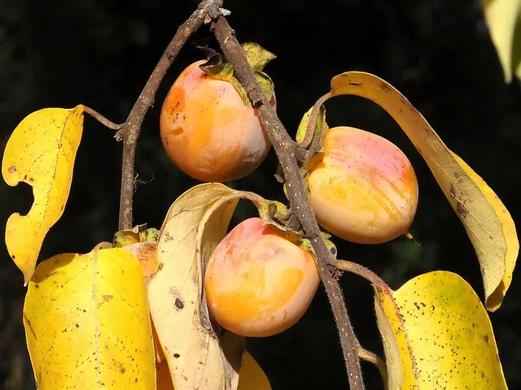

Desserts · Popular in Midwest and Southeast
Persimmon pudding
Persimmon pudding is made with wild American persimmon, a favourite in Midwest and Southeast.

How do you make persimmon pudding?
Spiced baked pudding of ripe persimmon pulp, a Midwestern and Southern tradition.
Wild ingredients
- American persimmon (Diospyros virginiana): in season September to November
Watch the recipe

Video: Little Sweet Baker on YouTube